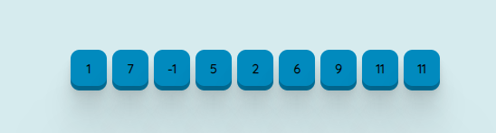
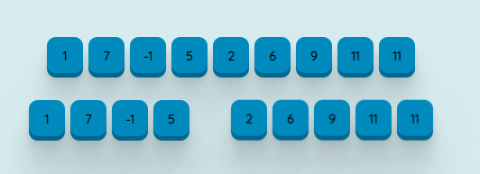
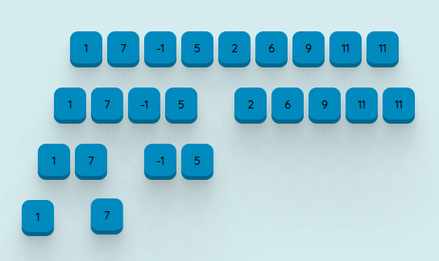
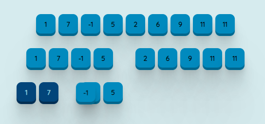
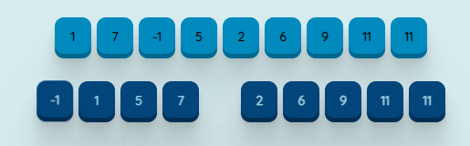
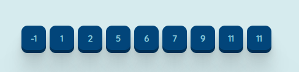

El ordenamiento por mezcla o Merge Sort es un algoritmo de ordenamiento basado en comparaciones, se implementa utilizando la técnica de divide y vencerás. En el peor de los casos la complejidad es O(nlogn). El algoritmo fue inventado por Jonhn Von Neumann en 1945.
Divide y vencerás
El paradigma de Divide y vencerás, esta basado en buscar la resolución recursiva de un problema dividiéndolo en 2 o mas subproblemas de igual tipo o similar, siempre y cuando estos no se solapen. El proceso continúa hasta que estos llegan a ser suficientemente sencillos como para obtener una solución directa. Finalmente, las soluciones obtenidas de cada uno de los subproblemas se combinan para dar una solución al problema original
Para que convenga aplicar la técnica de divide y vencerás debe cumplirse lo siguiente
- Las operaciones descomponer y combinar deben ser bastante eficientes
- El numero de subproblemas generados sea pequeño
- Los subproblemas sean aproximadamente del mismo tamaño y no se solapen entre si
Merge Sort
Conceptualmente, el ordenamiento por mezcla funciona de la siguiente manera
- Si la longitud de la lista es 0 o 1, entonces ya se encuentra ordenada
- Dividir la lista desordenada en 2 sublistas de aproximadamente la mitad del tamaño
- Ordenar cada sublista recursivamente aplicando el ordenamiento por mezcla
- Mezclar las dos sublistas en una sola lista ordenada
Merge Sort incorpora dos ideas principales para mejorar su tiempo de ejecución.
- Una lista pequeña necesitara menos pasos para ordenarse que una lista grande
- Se necesitan menos pasos para construir una lista ordenada a partir de dos listas también ordenadas, que a partir de dos listas desordenadas
Funcionamiento
Se parte de tener un arreglo de tamaño n desordenado
En caso de que la longitud sea mayor a 1 se divide todo el arreglo en dos partes aproximadamente iguales
Se dividen los subarreglos resultantes hasta que los arreglos sean de tamaño uno
Posteriormente se comparan los elementos de cada lista y se combinan de una manera ordenada en un solo arreglo.
Al tener los subarreglos acomodados únicamente se comparan los extremos de cada arreglo, ya que contienen los valores más pequeños.
Finalmente se combinan los subarrelglos ordenados en un solo arreglo, obteniendo el arreglo original acomodado.
